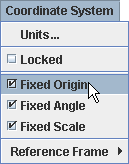
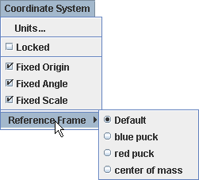

When you mark a point in Tracker's main video view, you are defining its image position. Image positions are measured in pixel units relative to the top left corner of the video image. In a 320 x 240 pixel image the upper left corner is at image position (0.0, 0.0) and the lower right is at (320.0, 240.0).
Since a video image is a camera view of the real world, a physical object within that image also has world coordinates. World coordinates are measured in scaled world units (e.g., meters) relative to a specified reference frame. The origin of the reference frame may be anywhere on or off the image.
The coordinate system is a set of transformations used to convert image positions into world coordinates. The coordinate system defines for each frame of the video:
By default, the scale, origin and angle of the coordinate system are fixed--that is, they do not vary from frame to frame. However, any or all of these may be allowed to vary by turning off the appropriate Fixed property in the Coordinate System menu on the menu bar.

The positions and properties of the origin that you set are those of the default reference frame. The Coordinate System|Reference Frame menu enables you to select other reference frames in which the origin moves along with a point mass, center of mass or particle model track. Center of mass reference frames are particularly useful when studying collisions.

By default, LMT units (length, mass and time) are those of the SI metric system: meters, kilograms and seconds. However, you can change the length and mass units to any unit desired using the Units dialog (the time unit cannot be changed). Length units can also be set by entering them along with the value when setting the length of a calibration stick/tape.
Angle units can be either degrees or radians. You can set the angle units in the Units dialog or switch easily between radians and degrees by right-clicking any angle field and selecting from the popup menu.
To open the Units dialog choose Coordinate System|Units... or right-click a text field or datatable and select Numbers|Units... from the popup menu.

By default, LMT units are visible in all fields, tables, and plots. To hide the units, right-click any field with units and choose Hide Units from the popup menu. To show them again, right-click and choose Show Units.
Set the scale using a calibration stick/tape or calibration points.
Set the position of the origin using the axes, an offset origin or calibration points.
Set the angle of the x-axis using the axes, calibration stick/tape or calibration points.
Locking the coordinate system prevents any changes to the scale, origin and angle. Lock it by turning on the Locked property in the Coordinate System menu.